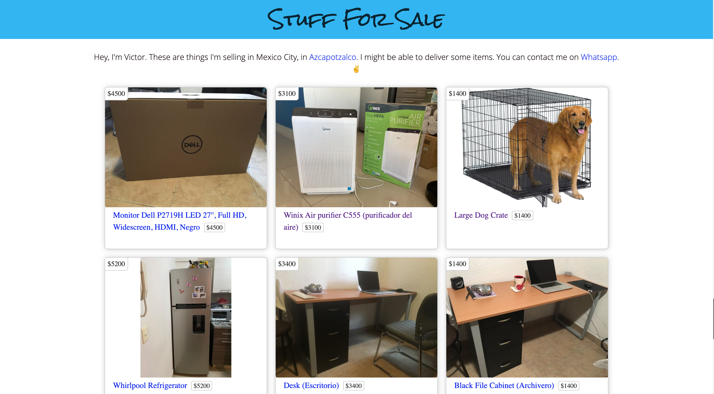

Projects
Restaurant website: A potential freelance project yet to launch. It's goal is to provide any restaurant with a simple way to get a responsive website with ordering and payments features up and running fast.Technologies used: Ruby on Rails, Javascript, media queries, CSS grid, Flexbox
Integrations: Stripe payments API, Active Admin

Personal website for selling my things: When I was still living in Mexico City and moving, I created this personal website to list everything I was selling.
Technologies used: Ruby on Rails, Javascript, media queries, CSS grid, Flexbox
A few months before I moved out of Mexico City, I decided to build a site for listing everything that I would be selling and figured this would help me practice javascript fundamentals. I decided to model my site after Craigslist and to see if I could come close to it's design. The end result that I was going for was simple but functional.
Wordsplash: A flashcards app for learning Spanish vocabulary that I built for myself.
Technologies used: Ruby on Rails, Javascript, media queries, CSS grid, Flexbox, Microsoft Translator API, Bing Images Search API
APIs used: Microsoft Translator API, Bing Images Search API
 As a Spanish learner, I thought it would be fun to make a learning tool for myself. I’d consider myself to be somewhere between proficient and fluent, and there’s never a shortage of new vocabulary to learn. I wasn’t aiming to reinvent the wheel completely, but I did want to make a flashcards based app that had something a little different than what exists out there in the market today.
I decided to do photo based flashcards and to make it a little more fun and allow the user to pick the photos they liked most. I broke the project into smaller pieces and worked on translation first. I initially used an API from Russia called Yandex as it was free and simple to set up. But several months later, it was no longer free and so I switched to Microsoft’s Translation API. Either one was actually pretty straightforward to set up. Then I moved on to the photos and researched different search engine’s APIs and also chose Microsoft as it too was free. I decided to request the first 10 images for any word that a user looked up. The user would then choose however many photos they wanted, and those would in turn be created into flashcards. The flashcards would be randomly chosen as the user went through the flashcards app. There wasn’t anything particularly challenging up to this point, but I did start to become more comfortable working with different APIs, getting a JSON back, and extracting what I needed from it. I was also able to practice more of Javascript and even CSS animations in a separate feature.
As a Spanish learner, I thought it would be fun to make a learning tool for myself. I’d consider myself to be somewhere between proficient and fluent, and there’s never a shortage of new vocabulary to learn. I wasn’t aiming to reinvent the wheel completely, but I did want to make a flashcards based app that had something a little different than what exists out there in the market today.
I decided to do photo based flashcards and to make it a little more fun and allow the user to pick the photos they liked most. I broke the project into smaller pieces and worked on translation first. I initially used an API from Russia called Yandex as it was free and simple to set up. But several months later, it was no longer free and so I switched to Microsoft’s Translation API. Either one was actually pretty straightforward to set up. Then I moved on to the photos and researched different search engine’s APIs and also chose Microsoft as it too was free. I decided to request the first 10 images for any word that a user looked up. The user would then choose however many photos they wanted, and those would in turn be created into flashcards. The flashcards would be randomly chosen as the user went through the flashcards app. There wasn’t anything particularly challenging up to this point, but I did start to become more comfortable working with different APIs, getting a JSON back, and extracting what I needed from it. I was also able to practice more of Javascript and even CSS animations in a separate feature.
Streety: An MVP for finding great street food in Mexico City. (Mobile only. Lead developer on this group project with T.J. Zuvic and Rodrigo Sanchez at Lewagon)
Technologies used: Ruby on Rails, Javascript, background jobs & sidekiq
Integrations: Mapbox, Google Text to Speech API
For our second group project at Lewagon, I came up with the idea of a web app for finding great, locals recommended, street food. I find that as travelers in a new country, we sometimes hold ourselves back from trying new foods, particularly street food, because it's often something we're unfamiliar with, we don't know what to order, or even how to order which is often the case when we don't speak the local language. For this project, being our second and final project, I really went into it with the intention of learning as much as I possibly could before the bootcamp ended so that I could take full advantage of having the expertise of the teachers by my side.
Like our first project, Just Ride, we spent a ton of time working out our core features, writing out our database schema, and doing our low fidelity mockups. Some initial core features ended up being search, mapped results, and a menu for each food stall. But I wasn't satisfied with just basic features. We came up with a bunch more ideas and in the end, we added in features for "bookmarks", "recommendations", "local recommended", a current location finder for the search, a QR code scanner, and finally what I'm most proud of is sound bites for how to pronounce in Spanish each stall's menu items.
One of the challenges that came early on was coming up with our database schema. What models made the most sense and how we would build the associations. It made us realize that we needed to go back and think more about the user journey. I ended up deciding that to maintain a standard of quality in menu item definitions, each food stall that was added would be able to be selected from a predefined set of foods. The end goal being that all mexican food types would exist in the database. For the purposes of this project, we only included a number of foods.
Challenges: schema, walking distance, sound bite API
For our second and final group project at Lewagon, I came up with the idea of a web app for finding great, locals recommended, street food. I find that as travelers in a new country, we sometimes hold ourselves back from trying new foods, particularly street food, because it's often something we're unfamiliar with, or we don't know what to order, or even how to order, which is often the case when we don't speak the local language. I went into this project with the intention of learning as much as I possibly could and building the most features possible in the given time frame. Like our first project, we spent a lot of time working out our core features, mapping our database schema, and producing low fidelity mockups. Some initial core features were a search bar, mapped search results, and a menu for each food stall. But I wanted the app to be a lot more capable than that. We came up with a long list of ideas and narrowed it down to a few, including "bookmarks", "recommendations", a "locals recommended" tag, a current location finder for search, a QR code scanner for menus, walking distances and time, and finally what I'm most proud of: sound bites for how to pronounce each food item in Spanish. Bookmarks, walking distances and times, and sound bites were the most challenging features to build as they had lots of moving pieces. With bookmarks, it was not too challenging technically but rather it involved learning new things I was not familiar with and understanding how each piece connected to the others. To build the feature, I utilized helper methods, the js.erb file format, as well as using the respond_to method, and turbolinks. At this point, I learned to load my javascript files only on the relevant html page in order to avoid javascript conflicts. Implementing walking distances and times was an incredibly fun experience. I used the geocoder gem to transform food stall addresses into coordinates. I originally thought that a user would just type in their location, but decided to also include a “get current location” option to simplify the user experience. This was done by using each browser’s native navigator.geolocation.getCurrentPosition() method. Lastly, I used Mapbox’s API for measuring walking distance and times. Adding in sound bites was the final big feature, one that came close to not being included due to our time restraint. I received help initially from the lead teacher at Lewagon as I felt unsure about the approach. He gave me some guidelines and even suggested I take the opportunity to integrate a job for this using sidekiq and redis (even though it wasn’t necessary at this project’s scale). Proudly, I can say I didn’t receive much hand holding after this point as we both agreed it would be better if I attempted to tackle the implementation on my own. First I tested the Google Text to Speech API in my seed file and once I got the audio file to create, I uploaded it to cloudinary to make sure cloudinary supported the audio file and I came to learn that Cloudinary actually will periodically and automatically delete files that are not part of the original deployment and so I decided it would be fine to upload the sound bite files to the tmp folder. Then I spent some time learning about jobs and then made sure I could get that to work with sidekiq. The job would run as an after_create action each time a new food category or food item was created. I ran into an error with active storage being able to upload an audio file to cloudinary but after troubleshooting with their technical support, I just needed to update the cloudinary gem. It was a wonderful moment when finally everything worked, and the last challenge was getting it to work in production with Heroku and understanding their dynos and the need to use redis cloud instead of sidekiq.JustRide: A peer to peer marketplace for renting motorcycles. (Desktop only. lead developer on this group project with T.J. Zuvic and Rodrigo Sanchez at Lewagon)
Technologies used: Ruby on Rails, Javascript
Integrations: Mapbox
My first project, which was a group project at Lewagon was to create an Airbnb type marketplace. We could choose any idea we wanted as long as it had a booking feature. After brainstorming ideas for a while, I decided on motorcycles. I hadn't ridden a motorcycle in 5 years and every once in a while, the urge would come. There was a particular motorcycle I was itching to try (the popular Kawasaki Ninja 400) but of the few rental companies I could find, none had it. I was sure plenty of people owned the bike and some wouldn't mind making a bit of money on the side by renting it out. Plus the cost to rent any motorcycle in those places was prohibitively expensive. Fortunately for me, my group members liked the idea and off we went.
We started by spending the greater part of a day listing out the features we would try to implement, approaching this project as building an MVP. Those core features would be booking, searching, and a show page for each motorcycle. Next, we mapped and drew our database schema to give us a solid foundation for how we would approach the backend. Once we had that sorted out, and given the time crunch of the coding bootcamp, we decided to use a tool I was already familiar with for doing low fidelity mockups: Balsamiq. I mocked up page by page our website, drawing some inspiration from other websites, and deciding to keep the design clean and simple. Admittedly, we had spent a lot of time preparing before we had even written a line of code, but this ended up being highly beneficial as we had few hiccups along the way once we got to coding.
I started off by building the backend and making sure the core models, controllers, views, and database were set up and working properly. Then I worked on the design of the homepage trying my best to make it look nice and inviting. I find that getting the hompage done, at least a working version, in the early stages of a project really fuels up motivation and gives me a good sense of what direction I want the general design to go in. After the homepage, I worked on the show page and booking feature. The part that had me scratching my head the most was how to set up an "upcoming bookings" page and a "past bookings" page, both for the host (motorcycle owner) and the customer. I ended up creating more booking controller actions to separate host bookings and client bookings, and then creating separate pages and tabs in the UI. My teammate T.J. tackled the search and search results pages, integrating Mapbox's API to display search results on a map as markers, and I assisted by updating the UI to match with the rest of the site. All in all, I learned a ton from doing this project and it was really our first attempt of taking everything we had learned up until that point and putting it together into a viable product. Since this project, I've been hooked on web development.